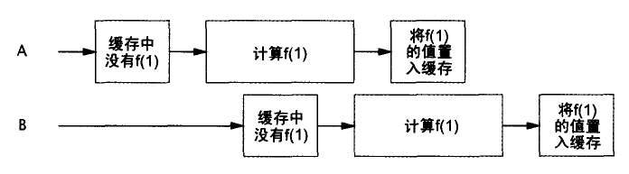
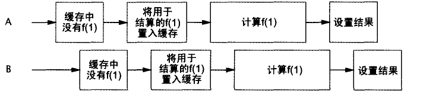

<!DOCTYPE HTML>
<html>
<head><meta name="generator" content="Hexo 3.9.0">
    <meta charset="utf-8">
    <meta http-equiv="X-UA-Compatible" content="chrome=1">
    <meta name="viewport" content="width=device-width, initial-scale=1, maximum-scale=1, user-scalable=no">

    

    <title>Java并发编程-构建块 | One code man</title>
    <meta name="author" content="wukai">
    
    <meta name="description" content="同步容器同步容器的问题同步容器都是线程安全的。但是对于复合操作，可能需要额外的加锁操作。
12345678public static Object getLast(Vector v) &amp;#123;	int index = v.size() - 1;	return v.get(index);&amp;#125">
    
    
  <meta name="viewport" content="width=device-width, initial-scale=1, maximum-scale=1">

    <meta property="og:title" content="Java并发编程-构建块">
    <meta property="og:site_name" content="thinkerwolf">

    
    <meta property="og:image" content>
    

    <link rel="icon" type="image/png" href="/favicon.png">
    <link rel="alternate" href="/atom.xml" title="thinkerwolf" type="application/atom+xml">
    <link rel="stylesheet" href="/css/lib/materialize.min.css">
    <link rel="stylesheet" href="/css/lib/font-awesome.min.css">
    <link rel="stylesheet" href="/css/style.css" media="screen" type="text/css">

    
        <link rel="stylesheet" href="/css/lib/prettify-tomorrow-night-eighties.css" type="text/css">
    
    <!--[if lt IE 9]><script src="//html5shiv.googlecode.com/svn/trunk/html5.js"></script><![endif]-->
</head>
</html>

<body>
    

    <nav class="indigo">
    <div class="nav-wrapper">
        <a href="#" data-activates="main-menu" class="button-collapse">
            <i class="fa fa-navicon"></i>
        </a>
        <div class="">
            <a href="/" class="brand-logo hide-on-med-and-down">thinkerwolf</a>
            <ul class="right hide-on-med-and-down">
                
                    <li>
                        <a class="menu-home " href="/" >
                            <i class="fa fa-home "></i>
                            
                            首页
                        </a>
                    </li>
                
                    <li>
                        <a class="menu-archive " href="/archives" >
                            <i class="fa fa-archive "></i>
                            
                            归档
                        </a>
                    </li>
                
                    <li>
                        <a class="menu-category category-menu" href="javascript:;" data-activates="category-menu" >
                            <i class="fa fa-bookmark "></i>
                            
                            分类
                        </a>
                    </li>
                
                    <li>
                        <a class="menu-reading " href="/reading" >
                            <i class="fa fa-book "></i>
                            
                            读书
                        </a>
                    </li>
                
                    <li>
                        <a class="menu-about " href="/about" >
                            <i class="fa fa-user "></i>
                            
                            关于
                        </a>
                    </li>
                
                    <li>
                        <a class="menu-search modal-trigger " href="#search" >
                            <i class="fa fa-search "></i>
                            
                            搜索
                        </a>
                    </li>
                
            </ul>
            <div>
    <ul class="side-nav indigo darken-1" id="main-menu">
        
        <li class="side-user">
            <div class="row">
                <div class="col s4 no-padding">
                    
                </div>
                <div class="info col s8 valign-wrapper no-padding">
                    <div class="valign">
                        <p class="name">吴凯</p>
                        <p class="desc">Java后端/机器学习/技术宅</p>
                    </div>
                </div>
            </div>
        </li>
        

        
            <li class="no-padding">
                <a class="waves-effect menu-home " href="/" >
                    <i class="fa fa-home "></i>
                    
                    首页
                </a>
            </li>
        
            <li class="no-padding">
                <a class="waves-effect menu-archive " href="/archives" >
                    <i class="fa fa-archive "></i>
                    
                    归档
                </a>
            </li>
        
            <li class="no-padding">
                <a class="waves-effect menu-category category-menu" href="javascript:;" data-activates="category-menu" >
                    <i class="fa fa-bookmark "></i>
                    
                    分类
                </a>
            </li>
        
            <li class="no-padding">
                <a class="waves-effect menu-reading " href="/reading" >
                    <i class="fa fa-book "></i>
                    
                    读书
                </a>
            </li>
        
            <li class="no-padding">
                <a class="waves-effect menu-about " href="/about" >
                    <i class="fa fa-user "></i>
                    
                    关于
                </a>
            </li>
        
            <li class="no-padding">
                <a class="waves-effect menu-search modal-trigger " href="#search" >
                    <i class="fa fa-search "></i>
                    
                    搜索
                </a>
            </li>
        
    </ul>

    <ul class="side-nav indigo darken-1" id="category-menu">
    

            

            <li class="collapse-level-0" collapse-level="0">
                <a class="no-padding" href="/categories/Java/">
                    Java <span class="right">19 篇</span></a>
                </a>
            </li>

        

            <li class="collapse-level-0" collapse-level="0">
                <a class="no-padding" href="/categories/机器学习/">
                    机器学习 <span class="right">10 篇</span></a>
                </a>
            </li>

        

            <li class="collapse-level-0" collapse-level="0">
                <a class="no-padding" href="/categories/MySQL/">
                    MySQL <span class="right">4 篇</span></a>
                </a>
            </li>

        

            <li class="collapse-level-0" collapse-level="0">
                <a class="no-padding" href="/categories/Network/">
                    Network <span class="right">1 篇</span></a>
                </a>
            </li>

        

            <li class="collapse-level-1" collapse-level="1">
                <a class="no-padding" href="/categories/Network/Java/">
                    Java <span class="right">1 篇</span></a>
                </a>
            </li>

        

            <li class="collapse-level-0" collapse-level="0">
                <a class="no-padding" href="/categories/linux/">
                    linux <span class="right">1 篇</span></a>
                </a>
            </li>

        

            <li class="collapse-level-0" collapse-level="0">
                <a class="no-padding" href="/categories/Distributed-System/">
                    Distributed-System <span class="right">1 篇</span></a>
                </a>
            </li>

        

    </ul>
</div>

        </div>
    </div>
</nav>

<div id="search" class="modal search-modal">
    <div class="row">
        <div class="input-field col s12">
              <input id="search-input" type="text">
              <label for="search-input">搜索</label>
        </div>

    </div>
    <div id="search-result" class="search-result col s12">

    </div>
</div>


    <main>
        <div class="container main-container">
    <nav class="page-nav hide-on-small-only">
    <div class="nav-wrapper indigo">
        <span class="breadcrumb">当前位置（分类目录）</span>
        
            
    
    
    <a class="breadcrumb" href="/categories/Java/">Java</a>


        

        
    </div>
</nav>

<article>
    <div class="card">
        <div class="card-content">
            

            <div class="article-title">
                
    
        <h1>Java并发编程-构建块</h1>
    


            </div>
            <time class="pink-link-context" datetime="2019-06-25T10:10:28.000Z"><a href="/2019/06/25/concurrent-programme-5-building-blocks/">2019-06-25</a></time>

            <span id="busuanzi_container_page_pv" class="read-times-container">
    <i class="fa fa-eye"></i>
    <span id="busuanzi_value_page_pv"></span>
</span>

            
    <div class="tags-row">
        
            <a href="/tags/Java并发编程/" class="chip pink lighten-1">Java并发编程</a>
        
    </div>


            <div class="toc pink-link-context hide-on-med-and-down">
    <ol class="section table-of-contents"><li class="section table-of-contents-item section table-of-contents-level-2"><a class="section table-of-contents-link" href="#同步容器"><span class="section table-of-contents-text">同步容器</span></a><ol class="section table-of-contents-child"><li class="section table-of-contents-item section table-of-contents-level-3"><a class="section table-of-contents-link" href="#同步容器的问题"><span class="section table-of-contents-text">同步容器的问题</span></a></li><li class="section table-of-contents-item section table-of-contents-level-3"><a class="section table-of-contents-link" href="#迭代器和ConcurrentModificationException"><span class="section table-of-contents-text">迭代器和ConcurrentModificationException</span></a></li></ol></li><li class="section table-of-contents-item section table-of-contents-level-2"><a class="section table-of-contents-link" href="#并发容器"><span class="section table-of-contents-text">并发容器</span></a><ol class="section table-of-contents-child"><li class="section table-of-contents-item section table-of-contents-level-3"><a class="section table-of-contents-link" href="#ConcurrentHashMap"><span class="section table-of-contents-text">ConcurrentHashMap</span></a></li></ol></li><li class="section table-of-contents-item section table-of-contents-level-2"><a class="section table-of-contents-link" href="#阻塞队列和生产者-消费者模式"><span class="section table-of-contents-text">阻塞队列和生产者-消费者模式</span></a></li><li class="section table-of-contents-item section table-of-contents-level-2"><a class="section table-of-contents-link" href="#阻塞和可中断的方法"><span class="section table-of-contents-text">阻塞和可中断的方法</span></a></li><li class="section table-of-contents-item section table-of-contents-level-2"><a class="section table-of-contents-link" href="#Sychronizer"><span class="section table-of-contents-text">Sychronizer</span></a><ol class="section table-of-contents-child"><li class="section table-of-contents-item section table-of-contents-level-3"><a class="section table-of-contents-link" href="#闭锁"><span class="section table-of-contents-text">闭锁</span></a></li><li class="section table-of-contents-item section table-of-contents-level-3"><a class="section table-of-contents-link" href="#FutureTask"><span class="section table-of-contents-text">FutureTask</span></a></li><li class="section table-of-contents-item section table-of-contents-level-3"><a class="section table-of-contents-link" href="#信号量"><span class="section table-of-contents-text">信号量</span></a></li><li class="section table-of-contents-item section table-of-contents-level-3"><a class="section table-of-contents-link" href="#关卡"><span class="section table-of-contents-text">关卡</span></a></li></ol></li><li class="section table-of-contents-item section table-of-contents-level-2"><a class="section table-of-contents-link" href="#为计算结果建立高效、可伸缩的缓存"><span class="section table-of-contents-text">为计算结果建立高效、可伸缩的缓存</span></a></li></ol>
</div>


            <div class="entry pink-link-context">
                <h2 id="同步容器"><a href="#同步容器" class="headerlink" title="同步容器"></a>同步容器</h2><h3 id="同步容器的问题"><a href="#同步容器的问题" class="headerlink" title="同步容器的问题"></a>同步容器的问题</h3><p>同步容器都是线程安全的。但是对于复合操作，可能需要额外的加锁操作。</p>
<figure class="highlight java"><table><tr><td class="gutter"><pre><span class="line">1</span><br><span class="line">2</span><br><span class="line">3</span><br><span class="line">4</span><br><span class="line">5</span><br><span class="line">6</span><br><span class="line">7</span><br><span class="line">8</span><br></pre></td><td class="code"><pre><span class="line"><span class="function"><span class="keyword">public</span> <span class="keyword">static</span> Object <span class="title">getLast</span><span class="params">(Vector v)</span> </span>&#123;</span><br><span class="line">	<span class="keyword">int</span> index = v.size() - <span class="number">1</span>;</span><br><span class="line">	<span class="keyword">return</span> v.get(index);</span><br><span class="line">&#125;</span><br><span class="line"><span class="function"><span class="keyword">public</span> <span class="keyword">static</span> Object <span class="title">deleteLast</span><span class="params">(Vector v)</span> </span>&#123;</span><br><span class="line">	<span class="keyword">int</span> index = v.size() - <span class="number">1</span>;</span><br><span class="line">	<span class="keyword">return</span> v.remove(index);</span><br><span class="line">&#125;</span><br></pre></td></tr></table></figure>
<p>这段代码看上去没有危害，但是对于调用者来说情况就不一样了。如果线程A执行了deleteLast方法后，线程B正好执行到getLast的return处，这样就会产生一个ArrayIndexOutOfBounds异常。可以对容器加锁避免这个问题。</p>
<figure class="highlight java"><table><tr><td class="gutter"><pre><span class="line">1</span><br><span class="line">2</span><br><span class="line">3</span><br><span class="line">4</span><br><span class="line">5</span><br><span class="line">6</span><br><span class="line">7</span><br><span class="line">8</span><br><span class="line">9</span><br><span class="line">10</span><br><span class="line">11</span><br><span class="line">12</span><br></pre></td><td class="code"><pre><span class="line"><span class="function"><span class="keyword">public</span> <span class="keyword">static</span> Object <span class="title">getLast</span><span class="params">(Vector v)</span> </span>&#123;</span><br><span class="line">	sychronized(v) &#123;</span><br><span class="line">		<span class="keyword">int</span> index = v.size() - <span class="number">1</span>;</span><br><span class="line">		<span class="keyword">return</span> v.get(index);</span><br><span class="line">	&#125;</span><br><span class="line">&#125;</span><br><span class="line"><span class="function"><span class="keyword">public</span> <span class="keyword">static</span> Object <span class="title">deleteLast</span><span class="params">(Vector v)</span> </span>&#123;</span><br><span class="line">    sychronized(v) &#123;</span><br><span class="line">		<span class="keyword">int</span> index = v.size() - <span class="number">1</span>;</span><br><span class="line">		<span class="keyword">return</span> v.remove(index);</span><br><span class="line">    &#125;</span><br><span class="line">&#125;</span><br></pre></td></tr></table></figure>
<figure class="highlight java"><table><tr><td class="gutter"><pre><span class="line">1</span><br><span class="line">2</span><br><span class="line">3</span><br><span class="line">4</span><br><span class="line">5</span><br><span class="line">6</span><br><span class="line">7</span><br><span class="line">8</span><br><span class="line">9</span><br><span class="line">10</span><br></pre></td><td class="code"><pre><span class="line"><span class="comment">// 利用迭代器Itertor，可能会产生ArrayIndexOutOfBounds异常</span></span><br><span class="line"><span class="keyword">for</span> (Object obj : vector) &#123;</span><br><span class="line">	<span class="comment">// ....</span></span><br><span class="line">&#125;</span><br><span class="line"></span><br><span class="line">sychronized (vector) &#123;</span><br><span class="line">    <span class="keyword">for</span> (Object obj : vector) &#123;</span><br><span class="line">		<span class="comment">// ....</span></span><br><span class="line">	&#125;	</span><br><span class="line">&#125;</span><br></pre></td></tr></table></figure>
<h3 id="迭代器和ConcurrentModificationException"><a href="#迭代器和ConcurrentModificationException" class="headerlink" title="迭代器和ConcurrentModificationException"></a>迭代器和ConcurrentModificationException</h3><figure class="highlight java"><table><tr><td class="gutter"><pre><span class="line">1</span><br><span class="line">2</span><br><span class="line">3</span><br><span class="line">4</span><br><span class="line">5</span><br></pre></td><td class="code"><pre><span class="line">List&lt;Widget&gt; widgets = Collections.sychronizedList(<span class="keyword">new</span> ArrayList&lt;&gt;());</span><br><span class="line"><span class="comment">// 可能产生ConcurrentModificationException</span></span><br><span class="line"><span class="keyword">for</span> (Widget w : widgets) &#123;</span><br><span class="line">	doSomething(w);</span><br><span class="line">&#125;</span><br></pre></td></tr></table></figure>
<p>有时widgets数量比较大，或者doSomething操作很耗时，对widgets加锁可能会降低性能，这是比较好的做法是将List复制一份进行迭代。但是需要根据需求和widgets的数量去权衡加锁或复制。</p>
<h2 id="并发容器"><a href="#并发容器" class="headerlink" title="并发容器"></a>并发容器</h2><p>同步容器利用容器自身进行串行访问，实现的线程安全，但是这样会严重削弱并发性。</p>
<p>并发容器就是为并发设计的。ConcurrentHashMap替代Map同步实现；读操作多时，使用CopyOnWriteArrayList替代List同步实现；新增Queue和BlockingQueue实现了队列；ConcurrentSkipListMap和ConcurrentSkipListSet作为SortedMap和SortedSet同步的替代品。</p>
<figure class="highlight plain"><table><tr><td class="gutter"><pre><span class="line">1</span><br></pre></td><td class="code"><pre><span class="line">用并发容器替换同步容易可以有效的提升高并发程序性能。</span><br></pre></td></tr></table></figure>
<h3 id="ConcurrentHashMap"><a href="#ConcurrentHashMap" class="headerlink" title="ConcurrentHashMap"></a>ConcurrentHashMap</h3><p>JDK7分离锁机制</p>
<h2 id="阻塞队列和生产者-消费者模式"><a href="#阻塞队列和生产者-消费者模式" class="headerlink" title="阻塞队列和生产者-消费者模式"></a>阻塞队列和生产者-消费者模式</h2><p>阻塞队列支持生产者-消费者设计模式。该模式不会发现一个工作就会执行，而是放在一个“TO DO”列表中。这种模式简化开发，解除了生产者和消费者之间相互依赖的代码，实现了解耦。最常见的生产者-消费者设计是将线程池和工作队列相结合的Executor。</p>
<h2 id="阻塞和可中断的方法"><a href="#阻塞和可中断的方法" class="headerlink" title="阻塞和可中断的方法"></a>阻塞和可中断的方法</h2><p>线程可能会因为几个原因被阻塞或暂停：等待I/O操作结束，等待获得一个锁，等待Thread.sleep中唤醒，等待另一个线程的计算结果。</p>
<p>BlockingQueue的put和take方法会抛出受检查的InterruptedException，这与类库其他的一些方法是相同的，比如Thread.sleep。<strong>当一个方法能抛出InterruptedException时，表明这个方法是一个可阻塞方法</strong>。进一步看，如果它可以被中断，将可以提前结束阻塞状态。</p>
<p>中断是一种<strong>协作</strong>机制。一个线程不能迫使其他线程停止正在做的事情，或者去做其他事情；当线程A中断线程B，只是让B在某个方便的停止点是停止。</p>
<p>当代码中调用一个会抛出InterruptedException的方法时，有两种基本选择：</p>
<p><strong>传递InterruptedException</strong>，将异常抛出去。或者先捕获，进行特定的操作后在抛出异常。</p>
<p><strong>恢复中断</strong>，先捕获异常，在当前线程中调用interrupt方法让上层代码知道中断已经发生。</p>
<figure class="highlight java"><table><tr><td class="gutter"><pre><span class="line">1</span><br><span class="line">2</span><br><span class="line">3</span><br><span class="line">4</span><br><span class="line">5</span><br><span class="line">6</span><br><span class="line">7</span><br><span class="line">8</span><br><span class="line">9</span><br><span class="line">10</span><br><span class="line">11</span><br></pre></td><td class="code"><pre><span class="line"><span class="keyword">public</span> <span class="class"><span class="keyword">class</span> <span class="title">TaskRunnable</span> <span class="keyword">implements</span> <span class="title">Runnable</span> </span>&#123;</span><br><span class="line">	<span class="keyword">private</span> BlockingQueue&lt;Task&gt; taskQueue = ...</span><br><span class="line">	<span class="meta">@Override</span></span><br><span class="line">	<span class="function"><span class="keyword">public</span> <span class="keyword">void</span> <span class="title">run</span><span class="params">()</span> </span>&#123;</span><br><span class="line">		<span class="keyword">try</span> &#123;</span><br><span class="line">			processTask(taskQueue.take());</span><br><span class="line">		&#125; <span class="keyword">catch</span> (IntterruptException e) &#123;</span><br><span class="line">			Thread.currentThread().interrupt();</span><br><span class="line">		&#125;</span><br><span class="line">	&#125;</span><br><span class="line">&#125;</span><br></pre></td></tr></table></figure>
<h2 id="Sychronizer"><a href="#Sychronizer" class="headerlink" title="Sychronizer"></a>Sychronizer</h2><p>Sychronizer是一个对象，根据本身的状态调节线程控制流。阻塞队列可以扮演一个Sychronizer角色。其他类型的Sychronizer包括信号量（Semaphore），关卡（barrier）， 闭锁（latch）。</p>
<h3 id="闭锁"><a href="#闭锁" class="headerlink" title="闭锁"></a>闭锁</h3><p>用来确保特性活动在其他活动完成后才继续执行（考虑CountDownLatch的使用）。</p>
<h3 id="FutureTask"><a href="#FutureTask" class="headerlink" title="FutureTask"></a>FutureTask</h3><p>FutureTask可作为闭锁，当将FutureTask提交后，Future.get()会一直阻塞直到任务完成。</p>
<figure class="highlight java"><table><tr><td class="gutter"><pre><span class="line">1</span><br><span class="line">2</span><br><span class="line">3</span><br><span class="line">4</span><br><span class="line">5</span><br><span class="line">6</span><br><span class="line">7</span><br><span class="line">8</span><br><span class="line">9</span><br><span class="line">10</span><br><span class="line">11</span><br><span class="line">12</span><br><span class="line">13</span><br><span class="line">14</span><br><span class="line">15</span><br><span class="line">16</span><br><span class="line">17</span><br><span class="line">18</span><br><span class="line">19</span><br><span class="line">20</span><br><span class="line">21</span><br><span class="line">22</span><br><span class="line">23</span><br><span class="line">24</span><br><span class="line">25</span><br><span class="line">26</span><br><span class="line">27</span><br><span class="line">28</span><br><span class="line">29</span><br><span class="line">30</span><br><span class="line">31</span><br><span class="line">32</span><br><span class="line">33</span><br><span class="line">34</span><br></pre></td><td class="code"><pre><span class="line"><span class="keyword">public</span> <span class="class"><span class="keyword">class</span> <span class="title">SearchProductInfoHelper</span> </span>&#123;</span><br><span class="line">    ExecutorService executor = Executors.newFixedThreadPool(<span class="number">4</span>);</span><br><span class="line">    </span><br><span class="line">	<span class="function"><span class="keyword">public</span>  ProductInfo <span class="title">get</span><span class="params">(<span class="keyword">final</span> String productId)</span> <span class="keyword">throws</span> InterruptedException, DataLoadExcepton </span>&#123;</span><br><span class="line">        FutureTask&lt;ProductInfo&gt; task = <span class="keyword">new</span> FutureTask&lt;&gt;(<span class="keyword">new</span> Callable&lt;ProductInfo&gt;() &#123;</span><br><span class="line">            <span class="function"><span class="keyword">public</span> ProductInfo <span class="title">call</span><span class="params">()</span> <span class="keyword">throws</span> Exception </span>&#123;</span><br><span class="line">                <span class="keyword">return</span> loadProduceInfo(productId);</span><br><span class="line">            &#125;</span><br><span class="line">		&#125;);</span><br><span class="line">        exexutor.execute(task);</span><br><span class="line">        <span class="comment">// 阻塞直到task完成</span></span><br><span class="line">        <span class="keyword">try</span> &#123;</span><br><span class="line">            <span class="keyword">return</span> task.get();</span><br><span class="line">        &#125; <span class="keyword">catch</span> (ExecutionException e) &#123;</span><br><span class="line">            Throwable cause = e.getCause();</span><br><span class="line">            <span class="keyword">if</span> (cause <span class="keyword">instanceof</span> DataLoadExcepton) &#123;</span><br><span class="line">                <span class="keyword">throw</span> (DataLoadExcepton) cause;</span><br><span class="line">            &#125; <span class="keyword">else</span> &#123;</span><br><span class="line">                <span class="comment">// 处理不同原因导致的错误</span></span><br><span class="line">                <span class="keyword">throw</span> launderThrowable(cause);</span><br><span class="line">            &#125;</span><br><span class="line">        &#125;</span><br><span class="line">    &#125;</span><br><span class="line">&#125;</span><br><span class="line"></span><br><span class="line"><span class="function"><span class="keyword">private</span> <span class="keyword">static</span> RuntimeException <span class="title">launderThrowable</span><span class="params">(Throwable t)</span> </span>&#123;</span><br><span class="line">    <span class="keyword">if</span> (t <span class="keyword">instanceof</span> RuntimeException) &#123;</span><br><span class="line">        <span class="keyword">return</span> (RuntimeException) t;</span><br><span class="line">    &#125; <span class="keyword">else</span> <span class="keyword">if</span> (t <span class="keyword">instanceof</span> Error) &#123;</span><br><span class="line">        <span class="keyword">throw</span> (Error) t;</span><br><span class="line">    &#125; <span class="keyword">else</span> &#123;</span><br><span class="line">        <span class="keyword">throw</span> <span class="keyword">new</span> IllegalStateException(<span class="string">"Not checked"</span>, t);</span><br><span class="line">    &#125;</span><br><span class="line">&#125;</span><br></pre></td></tr></table></figure>
<h3 id="信号量"><a href="#信号量" class="headerlink" title="信号量"></a>信号量</h3><p>控制能够同时访问某特定资源的活动的数量。可以用来实现资源池或给一个容器限定边界。（Semaphore）</p>
<h3 id="关卡"><a href="#关卡" class="headerlink" title="关卡"></a>关卡</h3><p>闭锁是一次性使用对象，一旦到最终状态，就不能被重置了。</p>
<p>关卡（barrier）类似于闭锁，它们能够阻塞一组线程，直到某些事件发生。关卡与闭锁的关键不同在于，必须等待所有线程同时到达关卡才能继续处理。<strong>闭锁等待的是事件</strong>；<strong>关卡等待的是线程</strong>；</p>
<h2 id="为计算结果建立高效、可伸缩的缓存"><a href="#为计算结果建立高效、可伸缩的缓存" class="headerlink" title="为计算结果建立高效、可伸缩的缓存"></a>为计算结果建立高效、可伸缩的缓存</h2><p>缓存看起来再简单不过。一个天真的高速缓存，即使能改进在单线程环境下的性能，也只不过将性能瓶颈转化为可伸缩的瓶颈。</p>
<figure class="highlight java"><table><tr><td class="gutter"><pre><span class="line">1</span><br><span class="line">2</span><br><span class="line">3</span><br><span class="line">4</span><br><span class="line">5</span><br><span class="line">6</span><br><span class="line">7</span><br><span class="line">8</span><br><span class="line">9</span><br><span class="line">10</span><br></pre></td><td class="code"><pre><span class="line"><span class="comment">// 版本1</span></span><br><span class="line"><span class="keyword">private</span> Map&lt;K, V&gt; cache = <span class="keyword">new</span> ConcurrentHashMap&lt;&gt;();</span><br><span class="line"><span class="function"><span class="keyword">public</span> V <span class="title">compute</span><span class="params">(K key)</span> </span>&#123;</span><br><span class="line">    V v = cache.get(key);</span><br><span class="line">    <span class="keyword">if</span> (v == <span class="keyword">null</span>) &#123;</span><br><span class="line">        v = computeValue(key);</span><br><span class="line">        cache.put(key, v);</span><br><span class="line">    &#125;</span><br><span class="line">    <span class="keyword">return</span> v;</span><br><span class="line">&#125;</span><br></pre></td></tr></table></figure>
<p></p>
<figure class="highlight java"><table><tr><td class="gutter"><pre><span class="line">1</span><br><span class="line">2</span><br><span class="line">3</span><br><span class="line">4</span><br><span class="line">5</span><br><span class="line">6</span><br><span class="line">7</span><br><span class="line">8</span><br><span class="line">9</span><br><span class="line">10</span><br><span class="line">11</span><br><span class="line">12</span><br><span class="line">13</span><br><span class="line">14</span><br><span class="line">15</span><br><span class="line">16</span><br><span class="line">17</span><br><span class="line">18</span><br></pre></td><td class="code"><pre><span class="line"><span class="comment">// 版本2</span></span><br><span class="line"><span class="keyword">private</span> Map&lt;K, FutureTask&lt;V&gt;&gt; cache = <span class="keyword">new</span> ConcurrentHashMap&lt;&gt;();</span><br><span class="line"><span class="function"><span class="keyword">public</span> V <span class="title">compute</span><span class="params">(<span class="keyword">final</span> K key)</span> <span class="keyword">throws</span> InterruptedException </span>&#123;</span><br><span class="line">    FutureTask&lt;V&gt; f = cache.get(key);</span><br><span class="line">    <span class="keyword">if</span> (f == <span class="keyword">null</span>) &#123;</span><br><span class="line">        Callable&lt;V&gt; eval = <span class="keyword">new</span> Callable&lt;&gt;() &#123;</span><br><span class="line">          	<span class="function"><span class="keyword">public</span> <span class="keyword">void</span> <span class="title">call</span><span class="params">()</span> throw Exception </span>&#123;</span><br><span class="line">                <span class="keyword">return</span> omputeValue(key);</span><br><span class="line">            &#125;  </span><br><span class="line">        &#125;;</span><br><span class="line">        FutureTask&lt;V&gt; ft = <span class="keyword">new</span> FutureTask&lt;V&gt;();</span><br><span class="line">        f = ft;</span><br><span class="line">        ft.run();</span><br><span class="line">        cache.put(key, ft);</span><br><span class="line">    &#125;</span><br><span class="line">    <span class="comment">// 会阻塞直到ft.run执行完成</span></span><br><span class="line">    <span class="keyword">return</span> f.get();</span><br><span class="line">&#125;</span><br></pre></td></tr></table></figure>
<p></p>
<figure class="highlight java"><table><tr><td class="gutter"><pre><span class="line">1</span><br><span class="line">2</span><br><span class="line">3</span><br><span class="line">4</span><br><span class="line">5</span><br><span class="line">6</span><br><span class="line">7</span><br><span class="line">8</span><br><span class="line">9</span><br><span class="line">10</span><br><span class="line">11</span><br><span class="line">12</span><br><span class="line">13</span><br><span class="line">14</span><br><span class="line">15</span><br><span class="line">16</span><br><span class="line">17</span><br><span class="line">18</span><br><span class="line">19</span><br><span class="line">20</span><br></pre></td><td class="code"><pre><span class="line"><span class="comment">// 最终版，高</span></span><br><span class="line"><span class="keyword">private</span> Map&lt;K, FutureTask&lt;V&gt;&gt; cache = <span class="keyword">new</span> ConcurrentHashMap&lt;&gt;();</span><br><span class="line"><span class="function"><span class="keyword">public</span> V <span class="title">compute</span><span class="params">(<span class="keyword">final</span> K key)</span> <span class="keyword">throws</span> InterruptedException </span>&#123;</span><br><span class="line">    FutureTask&lt;V&gt; f = cache.get(key);</span><br><span class="line">    <span class="keyword">if</span> (f == <span class="keyword">null</span>) &#123;</span><br><span class="line">        Callable&lt;V&gt; eval = <span class="keyword">new</span> Callable&lt;&gt;() &#123;</span><br><span class="line">          	<span class="function"><span class="keyword">public</span> <span class="keyword">void</span> <span class="title">call</span><span class="params">()</span> throw Exception </span>&#123;</span><br><span class="line">                <span class="keyword">return</span> omputeValue(key);</span><br><span class="line">            &#125;  </span><br><span class="line">        &#125;;</span><br><span class="line">        FutureTask&lt;V&gt; ft = <span class="keyword">new</span> FutureTask&lt;V&gt;();</span><br><span class="line">        f = cache.putIfAbsent(key, ft);</span><br><span class="line">        <span class="keyword">if</span> (f == <span class="keyword">null</span>) &#123;</span><br><span class="line">        	f = ft;</span><br><span class="line">        	ft.run();</span><br><span class="line">        &#125;</span><br><span class="line">    &#125;</span><br><span class="line">    <span class="comment">// 会阻塞直到ft.run执行完成</span></span><br><span class="line">    <span class="keyword">return</span> f.get();</span><br><span class="line">&#125;</span><br></pre></td></tr></table></figure>

                
<p class="pink-link-context">
    <a href="/2019/06/27/concurrent-programme-6-execute-task/" rel="next" title="Java并发编程-任务执行">
    上一篇：Java并发编程-任务执行
  </a>
</p>


<p class="pink-link-context">
    <a href="/2019/06/24/concurrent-programme-4-compose-object/" rel="next" title="Java并发编程-组合对象">
    下一篇：Java并发编程-组合对象
  </a>
</p>


            </div>
			
        </div>
    </div>
</article>


</div>

        <div class="fixed-action-btn float-sitemap">
    <a class="btn-floating btn-large pink">
      <i class="fa fa-caret-square-o-up"></i>
    </a>
    <ul>
      <li><a class="btn-return-top btn-floating waves-effect green" title="回到顶部"><i class="fa fa-arrow-circle-o-up"></i></a></li>
      <li><a class="btn-floating waves-effect button-collapse yellow darken-1"  data-activates="main-menu" title="菜单"><i class="fa fa-navicon"></i></a></li>
    </ul>
  </div>

    </main>
    <footer class="page-footer indigo darken-1">
    
    <div class="footer-container container">
        <div class="row">
            
            <div class="social-group col m4 s12">
                <h5 class="white-text">社交</h5>
                
                    <a class="social-link" href="https://www.weibo.com/3854297228" target="_blank">
                        <i class="fa fa-2x fa-weibo"></i>
                    </a>
                
                    <a class="social-link" href="https://github.com/thinkerwolf" target="_blank">
                        <i class="fa fa-2x fa-github"></i>
                    </a>
                
                    <a class="social-link" href="/atom.xml" target="_blank">
                        <i class="fa fa-2x fa-rss"></i>
                    </a>
                
                
    <script async src="//dn-lbstatics.qbox.me/busuanzi/2.3/busuanzi.pure.mini.js">
    </script>
    <div class="site-visitors-container white-text">
        <span>
            <i class="fa fa-user"></i>
            <span class="busuanzi-value" id="busuanzi_value_site_uv"></span>
        </span>
        <span>&nbsp;|&nbsp;</span>
        <span>
            <i class="fa fa-eye"></i>
            <span class="busuanzi-value" id="busuanzi_value_site_pv"></span>
        </span>
    </div>


            </div>
            

            
            <div class="col m8 s12">
                <h5 class="white-text">友情链接</h5>
                
                    <a class="social-link" href="https://github.com/raytaylorlin" target="_blank">raytaylorism主题</a>
                
            </div>
            
        </div>
    </div>
    

    <div class="footer-copyright pink-link-context">
        <div class="container">
            © 2019 thinkerwolf.github.io, All rights reserved.
            <p class="right" style="margin-top: 0;">本博客由 <a href="https://hexo.io">Hexo</a> 强力驱动 | 主题 <a href="https://github.com/raytaylorlin/hexo-theme-raytaylorism">raytaylorism</a></p>
        </div>
    </div>
</footer>


    <noscript>
    <div class="noscript">
        <p class="center-align">当前网速较慢或者你使用的浏览器不支持博客特定功能，请尝试刷新或换用Chrome、Firefox等现代浏览器</p>
    </div>
</noscript>
<div class="noscript">
    <p class="center-align">当前网速较慢或者你使用的浏览器不支持博客特定功能，请尝试刷新或换用Chrome、Firefox等现代浏览器</p>
</div>


<script src="/js/jquery.min.js"></script>
<script src="/js/materialize.min.js"></script>

<script>
    (function($) {
        $(document).ready(function() {
            // 隐藏禁用javascript（针对微信内置浏览器）的提示
            $('.noscript').hide();

            // 图片缩放效果
            var $imgs = $('img').not('.slider-image').not('.avatar-image').not('.carousel-image').not('.card-cover-image').not('.qrcode');

            // 给图片加上点击放大效果（materialbox插件）
            $imgs.addClass('materialboxed').each(function(i, el) {
                $(this).attr('data-caption', $(this).attr('alt') || ' ');
            }).materialbox();

            // 优化表格的显示
            $('table').each(function() {
                var $table = $(this);
                // 除去多行代码的情况
                if ($table.find('pre').length == 0) {
                    $table.addClass('responsive-table striped bordered');
                }
            });

            // 首页幻灯片
            $('.slider').slider({indicators: true, full_width: true, interval: 8000});

            $(".button-collapse").sideNav();
            $(".category-menu").sideNav();

            // 针对gallery post
            $('.carousel').carousel({full_width: true});
            $('.carousel-control.prev').click(function() {
                $('.carousel').carousel('prev');
            });
            $('.carousel-control.next').click(function() {
                $('.carousel').carousel('next');
            });

            // 文章目录
            $('article').not('.simple-article').find('h1').add('h2').add('h3').add('h4').add('h5').add('h6').scrollSpy();

            // 目录随屏幕滚动（防止目录过长越过footer）
            var $toc = $('.toc');
            var scrollTargetTop = 0;
            $(window).scroll(function() {
                var $activeLink = $toc.find('a.active.section');
                if ($(window).scrollTop() < 100) {
                    scrollTargetTop = 0;
                } else {
                    if ($activeLink[0]) {
                        scrollTargetTop = $activeLink.offset().top - $toc.offset().top;
                    }
                }
                $toc.css('top', '-' + scrollTargetTop + 'px');
            });

            // 修正文章目录的left-border颜色
            var color = $('.table-of-contents-text').css('color');
            $('.table-of-contents-link').css('border-left-color', color);

            // 针对移动端做的优化：FAB按钮点击一下收回
            if (/Android|webOS|iPhone|iPad|iPod|BlackBerry|IEMobile|Opera Mini/i.test(navigator.userAgent)) {
                $('.fixed-action-btn').addClass('click-to-toggle');
            }
            // 回到顶部
            $('.btn-return-top').click(function() {
                $('body, html').animate({
                    scrollTop: 0
                }, 500);
            });

            // 重置读书页面的Tab标签页的颜色
            $('li.tab a').hover(function() {
                $(this).toggleClass('text-lighten-4');
            });
            $('.indicator').addClass('pink lighten-2');

            
            // 添加new标签
            $('.menu-reading, .menu-about').append('<span class="new badge pink"></span>');
            

            // 搜索功能
            $('.modal-trigger').leanModal({
                // 打开搜索框时自动聚焦
                ready: function() {
                    if ($('#search').is(":visible")) {
                        $('#search-input').focus();
                    }
                }
            });
            var searchXml = "";
            if (searchXml.length == 0) {
             	searchXml = "search.xml";
            }
            var searchPath = "/" + searchXml;
            initSearch(searchPath, 'search-input', 'search-result');
        });

        // 初始化搜索与匹配函数
        var initSearch = function(path, search_id, content_id) {
            'use strict';
            $.ajax({
                url: path,
                dataType: "xml",
                success: function(xmlResponse) {
                    // get the contents from search data
                    var datas = $("entry", xmlResponse).map(function() {
                        return {
                            title: $("title", this).text(),
                            content: $("content", this).text(),
                            url: $("url", this).text()
                        };
                    }).get();
                    var $input = document.getElementById(search_id);
                    var $resultContent = document.getElementById(content_id);
                    $input.addEventListener('input', function() {
                        var str = '<ul class=\"search-result-list\">';
                        var keywords = this.value.trim().toLowerCase().split(/[\s\-]+/);
                        $resultContent.innerHTML = "";
                        if (this.value.trim().length <= 0) {
                            return;
                        }
                        // perform local searching
                        datas.forEach(function(data) {
                            var isMatch = true;
                            var content_index = [];
                            var data_title = data.title.trim().toLowerCase();
                            var data_content = data.content.trim().replace(/<[^>]+>/g, "").toLowerCase();
                            var data_url = data.url;
                            var index_title = -1;
                            var index_content = -1;
                            var first_occur = -1;
                            // only match artiles with not empty titles and contents
                            if (data_title != '' && data_content != '') {
                                keywords.forEach(function(keyword, i) {
                                    index_title = data_title.indexOf(keyword);
                                    index_content = data_content.indexOf(keyword);
                                    if (index_title < 0 && index_content < 0) {
                                        isMatch = false;
                                    } else {
                                        if (index_content < 0) {
                                            index_content = 0;
                                        }
                                        if (i == 0) {
                                            first_occur = index_content;
                                        }
                                    }
                                });
                            }
                            // show search results
                            if (isMatch) {
                                keywords.forEach(function(keyword) {
                                    var regS = new RegExp(keyword, "gi");
                                    data_title = data_title.replace(regS, "<span class=\"search-keyword pink lighten-2\">" + keyword + "</span>");
                                });

                                str += "<li><a href='" + data_url + "' class='search-result-title'>" + data_title + "</a>";
                                var content = data.content.trim().replace(/<[^>]+>/g, "");
                                if (first_occur >= 0) {
                                    // cut out 100 characters
                                    var start = first_occur - 20;
                                    var end = first_occur + 80;
                                    if (start < 0) {
                                        start = 0;
                                    }
                                    if (start == 0) {
                                        end = 100;
                                    }
                                    if (end > content.length) {
                                        end = content.length;
                                    }
                                    var match_content = content.substring(start, end);
                                    // highlight all keywords
                                    keywords.forEach(function(keyword) {
                                        var regS = new RegExp(keyword, "gi");
                                        match_content = match_content.replace(regS, "<span class=\"search-keyword pink lighten-2\">" + keyword + "</span>");
                                    });

                                    str += "<p class=\"search-result\">..." + match_content + "...</p>"
                                }
                                str += "</li>";
                            }
                        });
                        str += "</ul>";
                        $resultContent.innerHTML = str;
                    });
                }
            });
        }
    })(jQuery);
</script>


<script src="/js/prettify.js"></script>
<script type="text/javascript">
    $(document).ready(function() {
        $("pre").addClass("prettyprint");
        prettyPrint();
    });
</script>


<script type="text/x-mathjax-config">
MathJax.Hub.Config({
  tex2jax: {inlineMath: [['$','$'], ['\\(','\\)']]}
});
</script>
<script type="text/javascript" async
  src="//cdn.mathjax.org/mathjax/latest/MathJax.js?config=TeX-MML-AM_CHTML">
</script>


</body>
</html>
